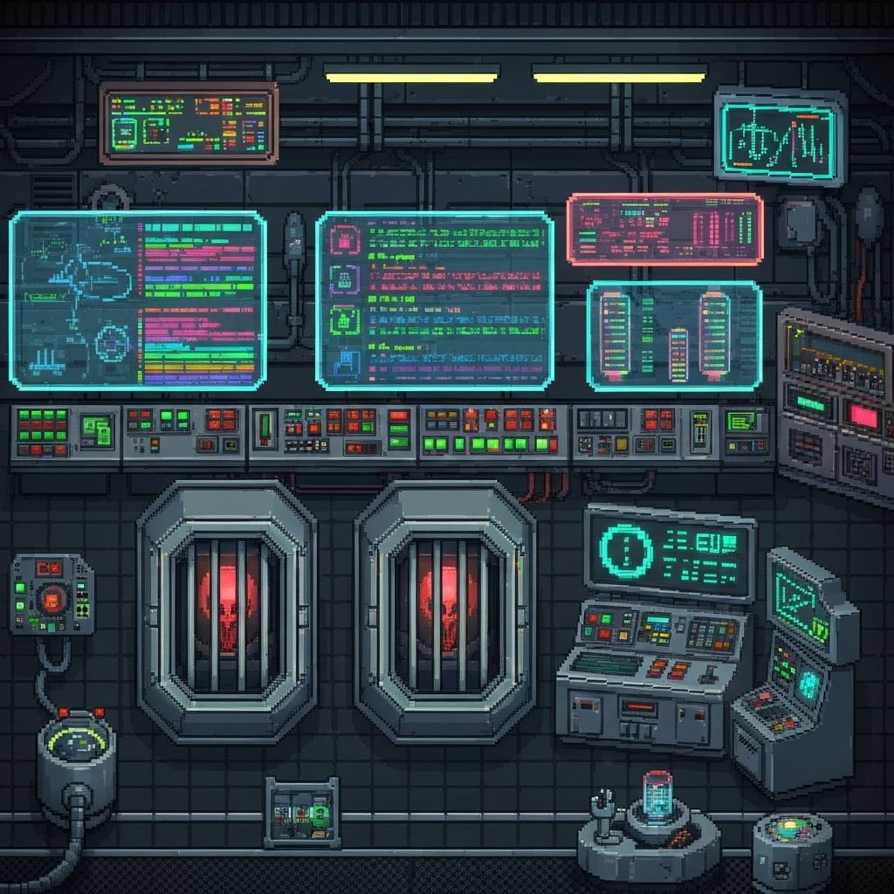
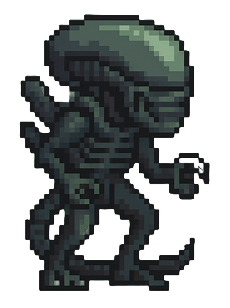

Aplicació full-stack per gestionar un zoo de criatures extraterrestres
🯠Objectius del projecte
⚛️ Generar el frontend amb ajuda de la IA v0
☕ Implementar el backend amb Spring Boot + MySQL
🳠Desplegar l’aplicació amb Docker Compose

🤖 IA seleccionada: v0
Per al frontend vaig utilitzar v0 AI (generació de UI amb React/Next.js).
La vaig escollir perquè permet:
⚡ Prototipar pantalles en minuts
🨠Generar codi ja integrat amb Tailwind + shadcn/ui
🚀 Accelerar el desenvolupament sense perdre qualitat
🔄 Iteració rà pida amb feedback visual instantani
📱 Responsive design automà tic amb breakpoints

💬 Registre d'interaccions amb v0
Exemples reals de com v0 em va guiar durant el desenvolupament:
Jo: "Crea un dashboard per gestionar mascotes alienÃgenes amb estadÃstiques" v0: "Creo un dashboard amb grid responsive, cards per cada mascota, i grà fics d'estadÃstiques usando Recharts"
Jo: "Necessito dockeritzar el projecte però no funciona l'autenticació" v0: "El problema són les URLs. Dins Docker usa 'backend-virtualpet:8080', des del navegador 'localhost:8080'"
Jo: "Vull que els sons funcionin quan em carrego a les mascotes" v0: "Creo una funció playReleaseSound() amb new Audio() i gestió d'errors per compatibilitat del navegador"
🔠Anà lisi del codi generat per v0
Exemple real: Component PetCard generat i millorat